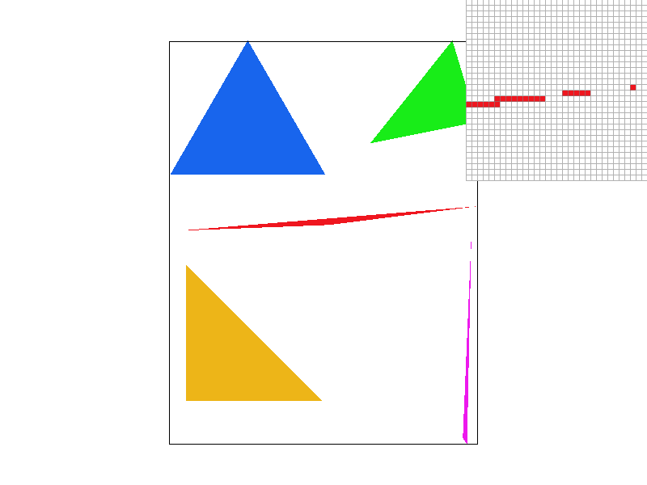
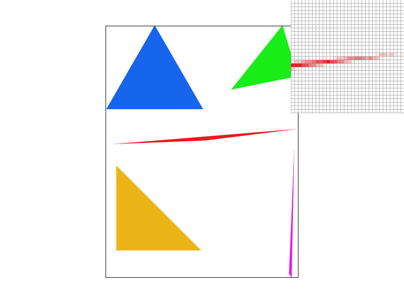
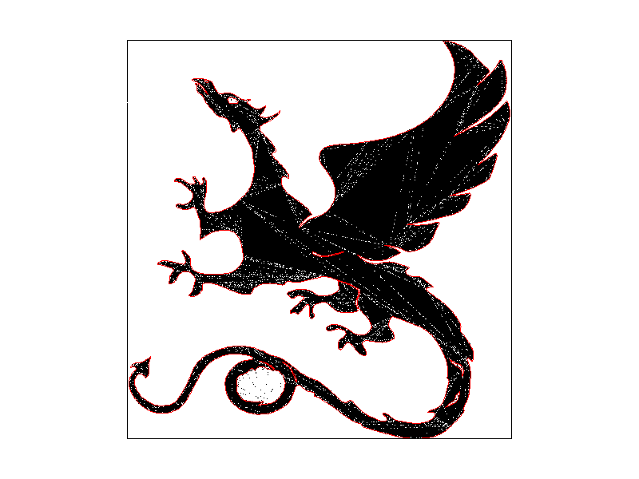
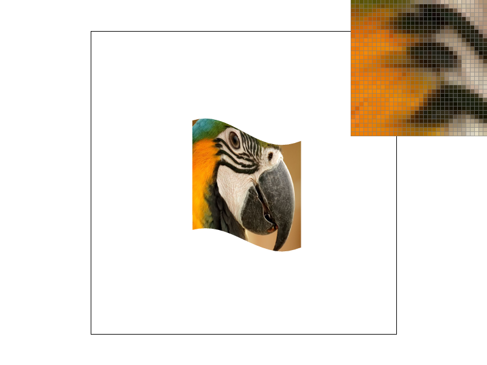
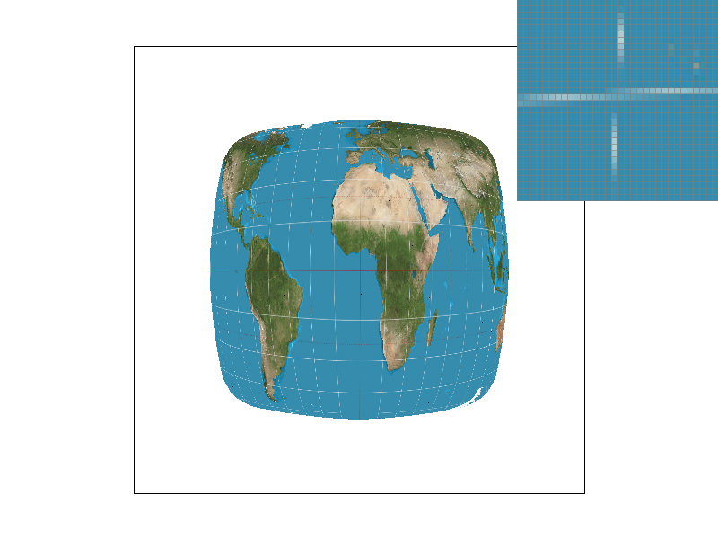
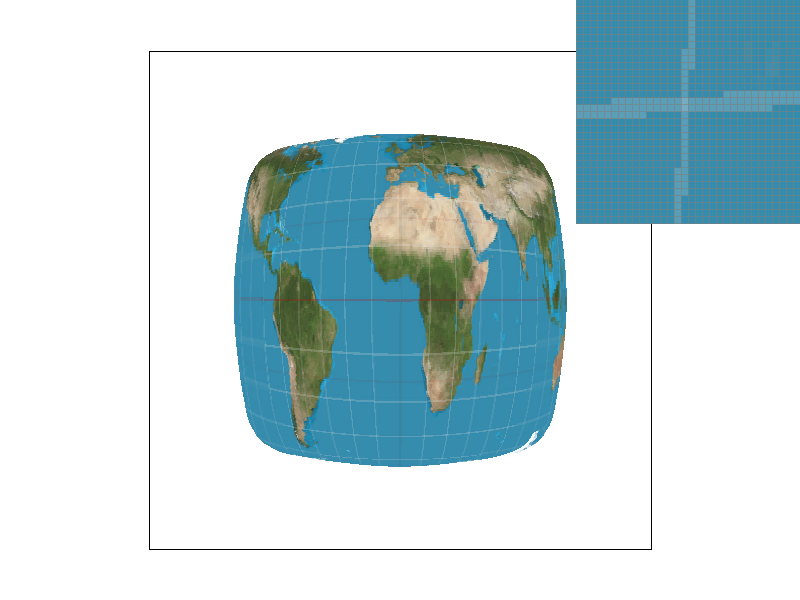

Overview
We implemented a triangle rasterizer to draw and color an image, supersampling to increase the quality of our image, barycentric coordinates to apply textures and color with greater detail, and pixel and level sampling as alternatives to supersampling.
Section I: Rasterization
Part 1: Rasterizing single-color triangles
In order to rasterize triangles we found the minimum and maximum x and y values, so we didn't need to iterate through the entire bounding box. We would then iterate through bounds defined by those values. For each value, we took the middle point, offset the x and y by .5, and checked if that point was within the bounds of the triangle coordinates. We checked by using formulas from class, specifically slides from lecture 2. In order to deal with winding issues, we added a check for if point B was below the line from point A to point C, if it's below, we need to reverse the sign of the test. This algorithm is no worse than one that checks each sample within the bounding box of the triangle because that's exactly what we're doing.
Part 2: Antialiasing triangles
Supersampling increases the overall quality of the image. In general, a higher sampling rate gets a better approximation of the original image. However, supersampling is costly beceause we are scaling up the number of computations by the sample rate. Supersampling also helps to get rid of artifacts in the image. Some pixels may appear isolated, but averaging down the supersampled pixels has the effect of blurring the image. To implement supersampling, we expanded the size of the sample buffer (a 2d array) in accordance with the sample rate and modified all parts of the code to account for that increased size.
As is plainly obvious in these comparison images, increased supersampiling results in better looking triangles. Lower sampling rate images have more artifacts like incomplete triangle corners and jagged edges. These occur because the sampling rate was too slow to account for the frequency of pixel changes in the image. Supersampling fixes these issues by having higher sampling speeds, which lowers the probability of alisasing as seen with lower frequencies.
|

|
|
|

|
Part 2 EC: Alternative Sampling Pattern
We also implemented an alternative supersampling scheme whereby we slightly perturb the sample locations called jittered sampling. The idea of jittered sampling is to avoid artifacts caused by the regularity of grid-based sampling. Note the interesting behavior of artifacts concentrated along the edges of the image triangles, and the fact that these artifacts decrease as sampling rate goes up.
|

|
|
If we increase the supersampling rate, these edge artifacts disappear. This is an expected result. Suppose an edge passes through a pixel. If we randomly sample that pixel it may land on either side of the edge and fill the pixel with the corresponding color. A pixel that is not along any edge would have the same color regardless of where the sample landed.
Part 3: Transforms
If we naively attempt to rotate the robot's arm we run into problems since the rotation transformation applies rotations about the origin which is the center of the arm segment whereas we would like to rotate about the joint. To solve, we first apply a translation of half the length of the arm segment to the right, rotate, then translate back.
Section II: Sampling
Part 4: Barycentric coordinates
For any point on a triangle, find the shortest distance line from each vertex of the triangle and that point. These distances, normalized so that they sum to 1, are the barycentric coordinates of that point. We normalize these distances so that each point in the triangle can be represented uniquely. One use of the barycentric coordinate system is to create an even color gradient across the triangle by defining each vertex to be a different color.

Part 5: "Pixel sampling" for texture mapping
Pixel sampling takes place within a texture map. The texture, from which we get our color, is already defined along a grid. Sometimes, we must sample a point that is between the pixel values contained in the grid. To do this, we estimate the color value of that point either through nearest pixel sampling or bilinear interpolation. For nearest pixel sampling, we simply set the color value of our sample to equal the color value of the closest texture coordinate. To implement bilinear interpolation, we find the nearest four texture coordinates by taking the floor and ceiling of the sample coordinates and then assign the sample the weighted average of the nearest four color values according to their distances from the sample.
|
|
|
|

|
|
When the supersample rate is 1, the parrot's stripes are noticably smoother with linear pixel interpolation. However, the differences between nearest pixel sampling and linear pixel interpolation are imperceptable when the supersample rate is 16. We do see that, when the supersample rate is 1, linear pixel interpolation approximates the image quality of a supersample rate of 16 better than nearest. This happens because linear takes into account the values of nearby pixels too while nearest only takes the nearest, so linear perserves more information from the original image.
Part 6: "Level sampling" with mipmaps for texture mapping
Mipmaps are a sequence of textures where each subsequent texture is downsampled from the previous. We use mipmaps to preserve detail when objects are close to the camera and save time rendering objects that are far away. Setting the mipmap level to zero would sample from the highest resolution level.
We might want to estimate the value of a point that is in between two levels. One way to do this would be to have that point assume the value of the nearest level. That would be nearest level sampling. We could also perform bilinear interpolation where we set the point's value to the weighted average of the nearest levels.
|
|

|
|

|
|
Supersampling gives us high quality images but at a high cost. The purpose of pixel and level sampling is to give us comparable image quality but without the computational cost. For pixel sampling, instead of packing more samples into one pixel and averaging down we just average from the nearest samples. For level sampling, we preserve computation by achieving high resolution only when needed (for objects that are closer). While level sampling is more efficient that pixel sampling, accuracy is lost because sometimes we are sampling from already downsampled versions of the texture. Level and pixel sampling generally take similar amounts of time to run, althought linear level seems to take slightly longer according to our clocks. Supersampling takes more memory and time, but comes out with the best anti-aliasing power.